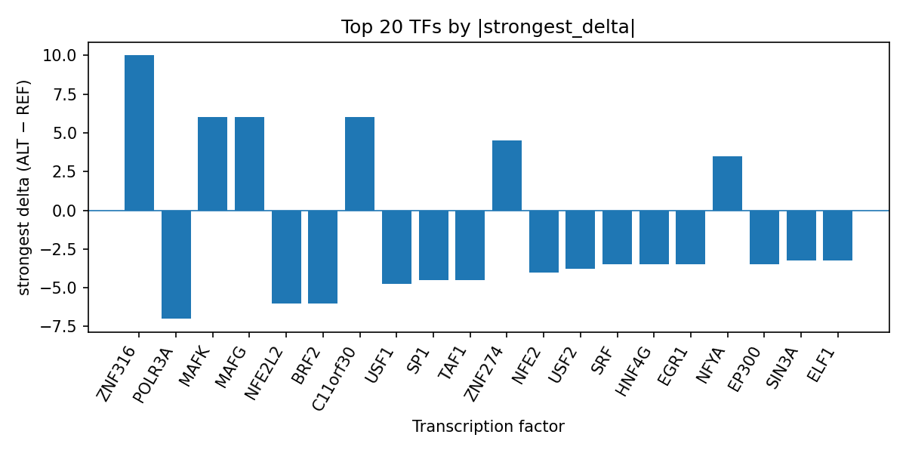

Author: snv-tf-researcher
Background: Progesterone-receptor positive breast cancer is a clinically defined subtype within the broader spectrum of hormone receptor-positive disease, and progesterone receptor status has been reported as independently relevant in breast cancer risk stratification and prognosis [1,2]. We used a computational variant-to-function workflow to prioritize a GWAS-associated SNV, rs62192052 (chr2:229507632 C>T), for potential transcription factor (TF) regulatory effects.
Methods: The candidate variant was selected by effect size from the provided dataset. Ensembl VEP consequence annotation classified rs62192052 as an intron_variant. AlphaGenome TF ChIP-seq tracks were used to predict allele-dependent differences between the ALT and REF alleles; these outputs are computational predictions, not experimental measurements. TF-level summaries were interpreted alongside the provided literature list and the run-table reference top_tf_effects.tsv.
Results: rs62192052 showed predicted TF perturbations spanning both promoted and inhibited binding signals. The strongest predicted positive effect was for ZNF316 in K562 cells, whereas the strongest predicted negative effect was for POLR3A in HeLa-S3 cells. Other prioritized TFs included MAFK, MAFG, NFE2L2, BRF2, USF1, SP1, TAF1, ZNF274, NFE2, USF2, SRF, HNF4G, EGR1, NFYA, EP300, SIN3A, ELF1, ETS1, BCLAF1, BCL3, BATF, RFX5, CTCF, TCF12, ZSCAN20, POLR2A, and SIX5. The workflow and result summaries are shown in Figures 1 and 2, and the per-TF run summary is reflected in top_tf_effects.tsv (Figure 2).
Conclusions: The AlphaGenome predictions prioritize rs62192052 as a plausible regulatory variant in progesterone-receptor positive breast cancer. These findings are hypothesis-generating only; experimental validation is required before any biological interpretation can be made.
Breast cancer is biologically heterogeneous, and receptor-defined subgroups are commonly used to describe clinically relevant disease categories [2,3]. Within hormone receptor-positive disease, progesterone receptor status has been reported as carrying independent prognostic and therapeutic implications in some contexts [2,3]. GWAS and related genetic studies have also suggested that common variants may contribute to breast cancer susceptibility and may differ by hormone receptor subgroup [4-7].
Computational variant-to-function approaches can help prioritize noncoding GWAS loci for follow-up by estimating allele-specific effects on regulatory features, including TF binding. In the present analysis, we focused on rs62192052, an intronic SNV selected by effect size in progesterone-receptor positive breast cancer. Because the selected locus may be in linkage disequilibrium with the true causal variant, these results should be interpreted as prioritization rather than causal inference. AlphaGenome predictions are computational outputs and require experimental validation.
The candidate SNV, rs62192052 (chr2:229507632 C>T), was provided as the prioritized locus for progesterone-receptor positive breast cancer. The variant had a reported effect size of 1.8971 in absolute log-odds ratio scale and a GWAS p value of 3.0 × 10^-9. The reported consequence term was intron_variant. No nearest gene was provided.
The analysis followed the provided workflow summary: disease and association retrieval, effect-size ranking and SNV filtering, Ensembl VEP consequence annotation and REF allele check, AlphaGenome TF ChIP-seq prediction, TF-level summarization, literature search, and manuscript synthesis (Figure 1). AlphaGenome TF ChIP-seq outputs were treated as computational predictions of allele-dependent binding differences rather than direct measurements.
Figure 1. End-to-end snv-tf-researcher workflow for prioritizing a GWAS SNV in progesterone-receptor positive breast cancer. The pipeline includes disease/association retrieval, effect-size-based SNV filtering, consequence annotation, allele checking, AlphaGenome TF ChIP-seq prediction, TF-level summarization, literature lookup, and manuscript drafting.
Only the PubMed records listed in the input were eligible for citation. The discussion of breast cancer receptor status and GWAS context was restricted to those provided records [1-7].
AlphaGenome TF ChIP-seq predictions suggested that rs62192052 may alter binding across a broad set of TFs. The strongest predicted gain was observed for ZNF316 (strongest delta 10.0 in K562), with additional predicted gains for MAFK, MAFG, ZNF274, C11orf30, and NFYA. The strongest predicted losses were observed for POLR3A (-7.0 in HeLa-S3), NFE2L2 (-6.0 in A549), and BRF2 (-6.0 in HeLa-S3), with additional predicted inhibition for USF1, SP1, TAF1, NFE2, USF2, SRF, HNF4G, EGR1, EP300, SIN3A, ELF1, ETS1, BCLAF1, BCL3, BATF, RFX5, CTCF, TCF12, ZSCAN20, POLR2A, and SIX5. The complete TF-level summary is available in top_tf_effects.tsv and is reflected in the ranked bar plot of the top TFs (Figure 2).

Figure 2. Ranked AlphaGenome TF ChIP-seq prediction summary for rs62192052. Bars show the strongest signed ALT-versus-REF delta for each TF, with positive values indicating predicted binding promotion and negative values indicating predicted binding inhibition. The figure highlights the top predicted TF perturbations used to prioritize the locus for follow-up.
The provided literature indicates that progesterone receptor status has been associated with clinically relevant breast cancer heterogeneity and with outcomes in some settings [1-3]. GWAS-based studies also support the idea that common variants can associate with breast cancer risk and, in some cases, with PR-positive phenotypes [4-7]. In that context, rs62192052 may represent a noncoding regulatory candidate whose predicted TF perturbations could be relevant to hormone receptor-positive disease biology, but this remains speculative because the AlphaGenome output is computational and not experimentally measured.
This analysis prioritizes rs62192052 as a potentially functional noncoding variant in progesterone-receptor positive breast cancer. The predicted effects are notable because the variant is intronic and shows allele-dependent changes across multiple TF ChIP-seq tracks, including both predicted gains and losses. Such mixed-direction TF perturbation patterns may indicate complex regulatory effects, but they do not establish a mechanism.
The literature provided in the run supports the broader relevance of receptor-defined breast cancer subtypes [1-3] and the possibility that common germline variants contribute to hormone receptor-positive disease susceptibility [4-7]. Prior reports in the supplied list include associations between breast cancer susceptibility loci and PR-positive disease in Chinese cohorts, as well as evidence that some sex-hormone-related loci are linked to hormone receptor-positive breast cancer risk [5-7]. The current computational predictions are consistent with the idea that a noncoding variant can influence regulatory protein binding and thereby help prioritize a GWAS locus for experimental follow-up.
AlphaGenome predictions should be viewed as hypothesis-generating. Because the variant was selected by effect size, it may be in linkage disequilibrium with the true causal variant. Experimental assays will be necessary to determine whether rs62192052 itself alters TF occupancy or whether the observed predicted signature reflects a proxy signal from a correlated locus.
Several limitations should be noted. First, the locus was selected by effect size and may be in linkage disequilibrium with the true causal variant. Second, AlphaGenome TF ChIP-seq outputs are computational predictions and not direct measurements of TF binding, chromatin state, or gene expression. Third, no nearest gene was provided, limiting direct gene-level interpretation. Fourth, the provided literature list does not include a disease-specific functional study of rs62192052, so interpretation must remain restricted to variant prioritization. Finally, experimental validation is required to establish whether any of the predicted TF perturbations are reproducible in relevant breast epithelial or tumor models.
Rai K, Garg P, Goyal J, Gupta B, Gupta P, Chanthar V, et al. Mammographic Breast Density Patterns and Tumor Characteristics in Indian Women with Breast Cancer: A Retrospective Observational Study. Indian J Surg Oncol. 2026;17(4):900-907. PMID: 42023173. doi:10.1007/s13193-026-02597-5
Chen HH, Chang SJ, Kan JY, Chen FM, Li CL, Takahashi H, et al. Prognostic Value of Ki-67 and Progesterone Receptor for Risk Stratification and Outcomes by Adjuvant Chemotherapy in Early Luminal-Type Breast Cancer. Breast Cancer (Dove Med Press). 2026;18:597707. PMID: 41948524. doi:10.2147/BCTT.S597707
O'Keefe TJ, Guo A, Vera DR, Wallace AM. Independent Relevance of Estrogen Receptor and Progesterone Receptor Statuses in DCIS on Risk of Subsequent Ipsilateral and Contralateral Invasive Breast Events in Absence of Endocrine Therapy. Cancers (Basel). 2026;18(7). PMID: 41976332. doi:10.3390/cancers18071109
Jia Z, Huang Y, Liu J, Liu G, Li J, Xu H, et al. Single nucleotide polymorphisms associated with female breast cancer susceptibility in Chinese population. Gene. 2023;884:147676. PMID: 37524136. doi:10.1016/j.gene.2023.147676
Johnson N, Maguire S, Morra A, Kapoor PM, Tomczyk K, Jones ME, et al. CYP3A7*1C allele: linking premenopausal oestrone and progesterone levels with risk of hormone receptor-positive breast cancers. Br J Cancer. 2021;124(4):842-854. PMID: 33495599. doi:10.1038/s41416-020-01185-w
Deng Z, Yang H, Liu Q, Wang Z, Feng T, Ouyang Y, et al. Identification of novel susceptibility markers for the risk of overall breast cancer as well as subtypes defined by hormone receptor status in the Chinese population. J Hum Genet. 2016;61(12):1027-1034. PMID: 27604554. doi:10.1038/jhg.2016.97
Kapoor PM, Lindström S, Behrens S, Wang X, Michailidou K, Bolla MK, et al. Assessment of interactions between 205 breast cancer susceptibility loci and 13 established risk factors in relation to breast cancer risk, in the Breast Cancer Association Consortium. Int J Epidemiol. 2020;49(1):216-232. PMID: 31605532. doi:10.1093/ije/dyz193